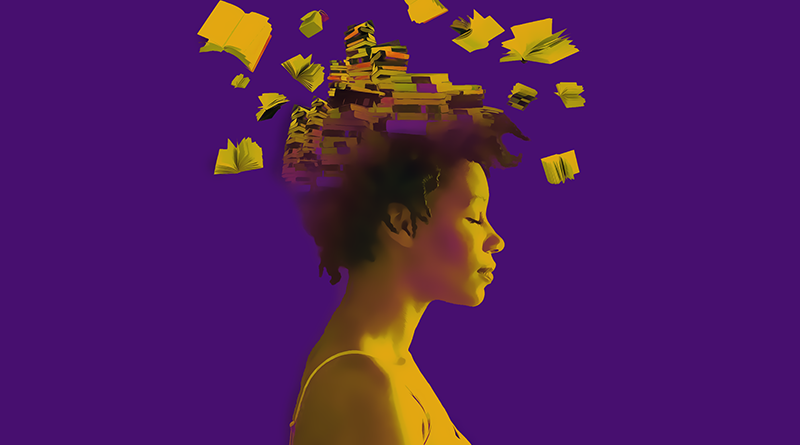

mulheres na literatura
Rachel de Queiroz. Cecília Meireles. Adélia Prado. Cora Coralina. E, claro, Clarice Lispector. Estes são os nomes que vêm à mente ao se pensar em escritoras brasileiras. Elas são, no entanto, exceções: a maioria das mulheres que almejam uma carreira no meio literário não ganha visibilidade, além de enfrentar dificuldades e preconceitos durante o processo de escrita, publicação e venda de seus livros.
De acordo com a quarta edição da pesquisa Retratos da Leitura no Brasil, realizada em 2016, as mulheres são as que mais leem dentre a população: 59% são leitoras. Além disso, para as pessoas que tiveram uma influência no hábito de leitura (33% dos entrevistados), as representantes do sexo feminino foram as principais responsáveis (11%). Ao saírem do lugar de leitoras, no entanto, os trabalhos das mulheres são ofuscados, e os nomes que ganham destaque são os masculinos.
Em toda a história, a exclusão das mulheres sempre foi amplamente semeada, tanto nos direitos básicos que lhes eram negados, como ao voto e escolha de matrimônio, quanto na questão da alfabetização e do estudo, restringindo-as apenas à vida familiar. Em relação à escrita, a atividade possuía apenas fins de etiqueta, sendo incentivada somente entre mulheres da elite. Revela-se, então, o desnivelamento entre a literatura escrita por mulheres e a escrita por homens — enquanto estes majoritariamente conseguiam escrever e publicar suas obras, a elas isso era negado e, muitas vezes, até proibido. Com isso, o isolamento sistemático das suas obras do cânone literário é regra, apenas com raras exceções.
Pelo fato de ser uma ocorrência histórica, essa exclusão causa, ainda hoje, uma certa insegurança nas mulheres, principalmente em consequência de discursos e estruturas sociais. Algumas autoras tendem a achar que o que escreveram não é bom o suficiente para ser lido ou publicado. Nas palavras da mediadora do clube de leitura Leia Mulheres, Michelle Henriques, de 31 anos: “Na sociedade, tem essa coisa da mulher precisar se provar muito mais do que o homem, e na literatura isso não é diferente”.
desvalorização da leitura nacional
Em um desses dias, em que acabo me perdendo em vários pensamentos enquanto converso com alguém, acabei me questionando sobre o preconceito que eu tinha com a literatura brasileira e percebi que não era só comigo.E o pior é que a sua dimensão é bem maior do que imaginamos.
A literatura brasileira vem a bom tempo sendo desvalorizada, é certo que sempre houve aquela parcela da população que não só gosta, mas também divulga obras incríveis escritas por autores brasileiros ainda mais incríveis, mas parando pra pensar, notei que a maioria dos jovens não dá todo o valor que as obras merecem e muitas vezes o motivo disso pode vir do ensino escolarn.Os professores tentavam nos fazer ler livros como Dom Casmurro com o intuito de nos ajudar a ter uma melhor base para os vestibulares, mas confesso que apesar de ter prazer em ler, essas obras, até então difíceis, acabaram me trazendo certo terror, com o tempo aprendi a gostar e valorizar sua influência, mas como nem todos somos iguais, conheci alguns que odiaram aquela história com palavras tão difíceis e desconhecidas que remetiam uma história de uma época ainda mais antiga e para alguns confusa.
Talvez o grande problema de toda essa desvalorização e pré-conceito é que muitos acham que todas as obras escritas por autores nacionais ainda são como Dom Casmurro, ainda são difíceis e com uma temática confusa sem nenhuma magia ou ficção que esteja mais para Senhor dos Anéis e menos ‘Será que Capitu traiu bentinho?’. Longe de mim questionar e dizer que essas obras são ruins, pelo contrário, acho que são de extrema importância ainda mais por todo o conceito histórico envolvido nelas, porém iniciar jovens com uma leitura tão complicada e uma linguagem diferente de seus costumes só os torna ainda mais aversivos a essa e quem sabe outras leituras. Talvez uma boa solução seja incentivar a leitura de um nacional que tenha mais do gosto do leitor, acostuma-lo a uma leitura mais simples, mostrar que nossos autores são bons e diferentes da primeira impressão que tiveram anteriormente, talvez mais divulgação do que é nosso, talvez mais incentivo de quem está próximo, sei que ainda são tentativas e ideias de longo prazo, mas, ainda sim, são tentativas e ainda sim, são positivas.
incentivo a leitura
Em 2014, a ilustradora e escritora britânica Joanna Walsh criou a campanha #ReadWomen2014 (#LeiaMulheres2014) no Twitter para incentivar a leitura de livros escritos por mulheres — e, assim, a discussão cresceu, tornando esta uma das hashtags mais comentadas daquele ano. Walsh postou em sua conta na rede social uma ilustração, em um cartão- postal feito por ela mesma, de escritoras que admirava. Além disso, iniciou uma lista contendo os nomes de grandes mulheres na literatura mundial.
A iniciativa da britânica gerou ações e questionamentos em várias partes do mundo. No Brasil, incentivou a criação de dois movimentos que se engajam em dar mais visibilidade à literatura escrita por mulheres: o Leia Mulheres e o#KDMulheres.
O Leia Mulheres, dirigido por Juliana Gomes, Juliana Leuenroth e Michelle Henriques, é um clube de leitura inspirado no projeto de Joanna com o intuito de divulgar obras escritas por mulheres. Inicialmente apenas em São Paulo, mas hoje espalhado entre muitas cidades brasileiras, o clube possui parcerias com livrarias, editoras e instituições, e também oferece um contato direto com as autoras. Ao colocarem a ideia do#ReadWomen2014 em prática, elas fazem o trabalho de inserção desta literatura em livrarias e centros culturais.
O #KDMulheresfoi criado por Martha Lopes e Laura Folgueira e, assim como os outros dois projetos, é voltado a aumentar a visibilidade e empoderamento de escritoras. Em seu site, fomenta debates acerca do tema e, fora das redes, promove oficinas de escrita em São Paulo destinadas ao público feminino. Por meio desse ato, a militância literária feminista se expande, faz mudanças reais na vida de mulheres escritoras, e também traz esperança àquelas que desejam seguir essa carreira.
Mesmo com a criação de espaços para a leitura de mulheres, nota-se que, além do machismo sofrido pelas autoras, muitas vezes há racismo atrelado às suas dificuldades de reconhecimento. Assim, Adriele Regine, Evelyn Sacramento e Paula Gabriela fundaram, em 2016, o clube do livroLendo Mulheres Negras, que conta com a leitura de escritoras exclusivamente negras. Segundo Evelyn, o acesso a essa literatura ainda é escasso, e esse é um dos maiores problemas enfrentados pelas mulheres negras no cenário da escrita.
logotipo do projeto lendo mulheres negras